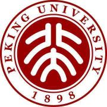

“足球无关生死，足球高于生死。”————比尔香克利
足球作为公认的世界第一大运动，却在中国占据一种极为尴尬的地位；事实上，足篮排三大球是评判一国家体育实力的最重要指标。即便被欧洲人讥为“足球荒漠”的美国，足球实力也位居前列，相形之下，我国的现状自然令人悲观。本人作为资深球迷和究极理论家（只看不踢）（狗头），对此深感悲哀。但在开头就先不提这样悲伤的事实了，让我们先来感受一下足球的魅力。
点击此处看视频喽
足球既含有阳刚的那一面，激情，冲动，拼搏；也有温柔的那一抹，友谊，温暖，博爱。因此，它并不是一种只属于莽夫的展示肌肉与蛮力的对抗，而是一个上演各色故事的舞台，一片属于朋友与对手，恩怨与情仇的江湖，一种世界，一段段人生。而可悲的是，时至今日，我们中的大多数仍然缺乏这样的认识，中国社会或许并未接受足球。
- “好好学习，别走歪门邪道，踢什么球。”
- “搞足球不赚钱，哪还有人看啊。”
- “国家应该把钱多花在经济建设上，这些虚的有什么用。”
现在回到我们之前提出的那个问题，很多人借“中国十四亿人，为什么还选不出十一个人去踢比赛？”来揶揄中国足球，其实他们没有明白，中国人口虽多，足球人口却很少很少，热爱这项运动的人很少很少。这是一个大国的悲剧，也是一项运动的不幸。所幸，我们一直有埋头苦干的人，有真正做事为体育事业发展着想的人，我相信，在不久的将来，我们可以在这个我们缺席很久的殿堂获得世界的尊重和一席之地。
话不多说，校徽镇楼。

世间传言，北清向来光芒迢耀四方；当我真的走进了这座园子，自豪感消退之后，才感到自己的责任重大。
眼前是前贤指引，身边是同窗相携，立足于国家之需，着眼于世界一流，是压力更是动力（虽然卷怪真的让人恐惧)；白衣执甲，更显医学生们的使命崇高（发白大褂是真的感到荣幸之至，虽然跟我们药学好像emmmmm关系没那么大...)。.所以，不负韶华，勇敢出发叭！